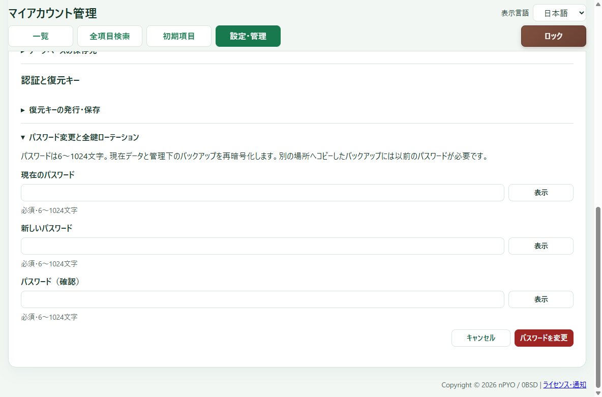
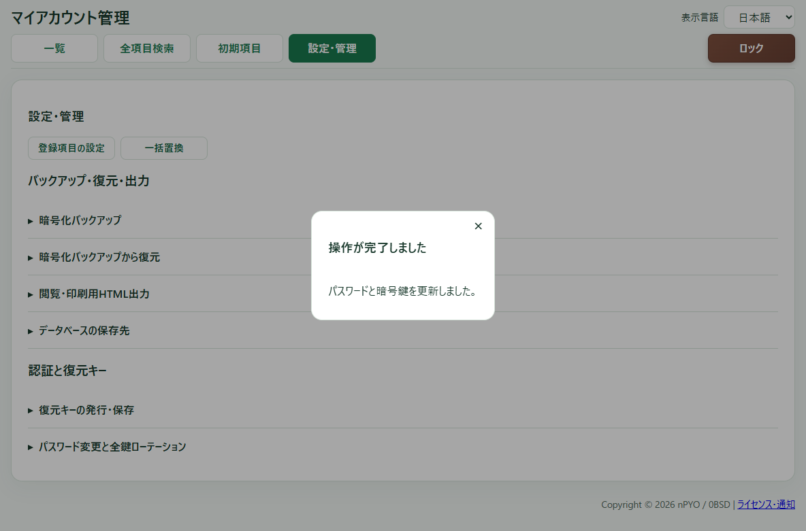
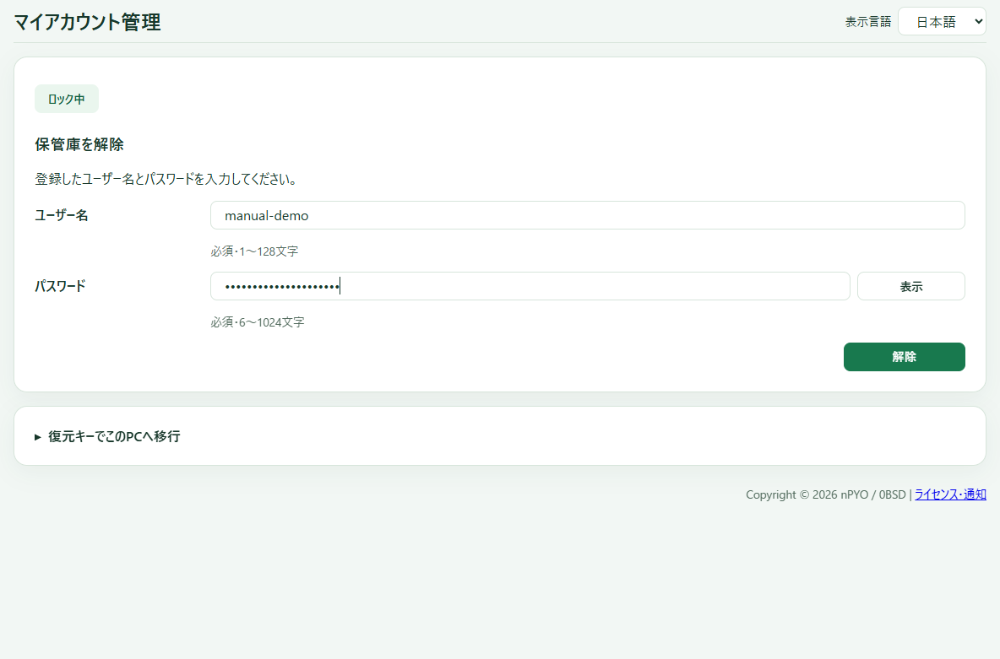
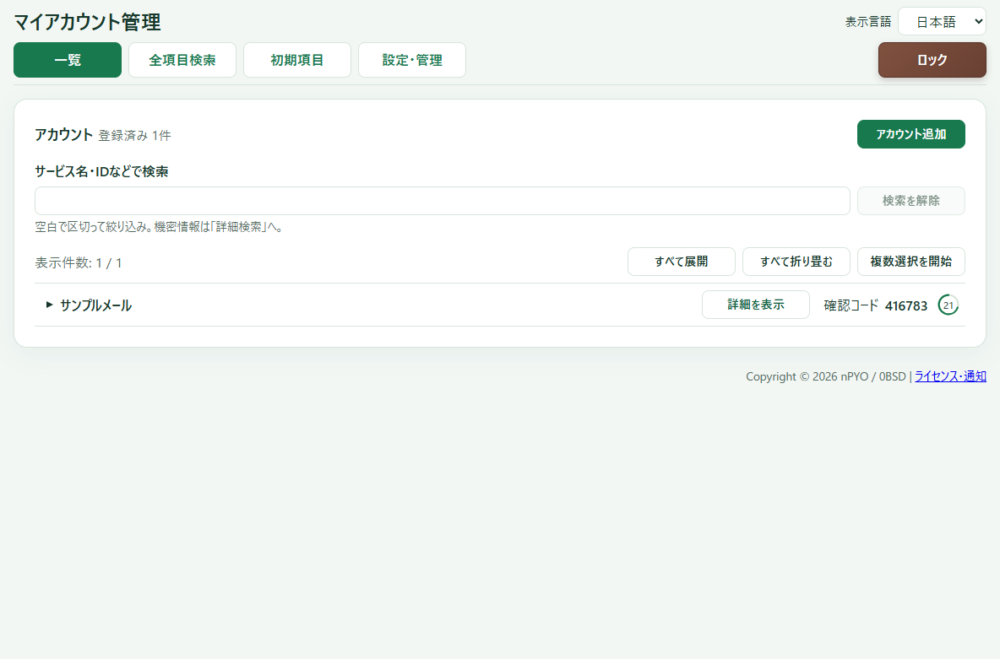

39ログインパスワードを変更
保管庫へログインするパスワードと暗号鍵を更新します。
1パスワード変更欄を開く
［設定・管理］の［パスワード変更と全鍵ローテーション］を開きます。

2現在・新規・確認を入力
現在のパスワードを入力し、新しいパスワードを確認欄にも同じ内容で入力します。
3［パスワードを変更］を押す
「パスワードと暗号鍵を更新しました。」を確認します。

4一度ロックする
完了表示を閉じ、［ロック］を押します。

5新しいパスワードを入力
登録ユーザー名と、変更後の新しいパスワードを入力します。

6［解除］して確認
［解除］を押して一覧が表示されることを確認します。
